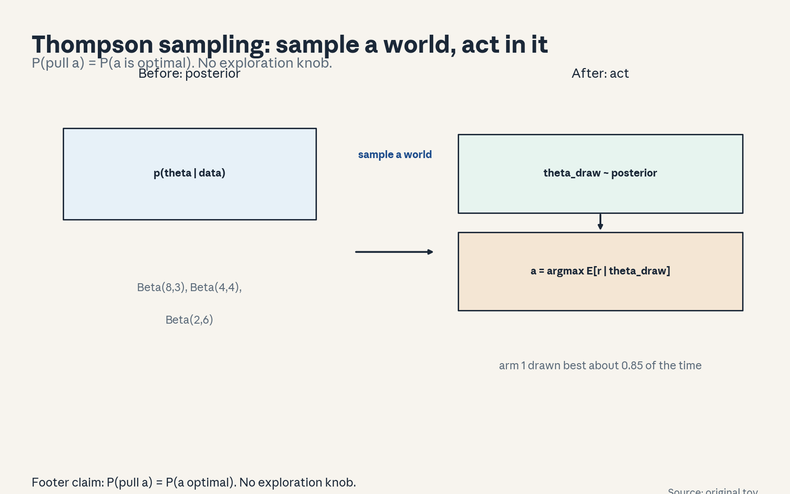
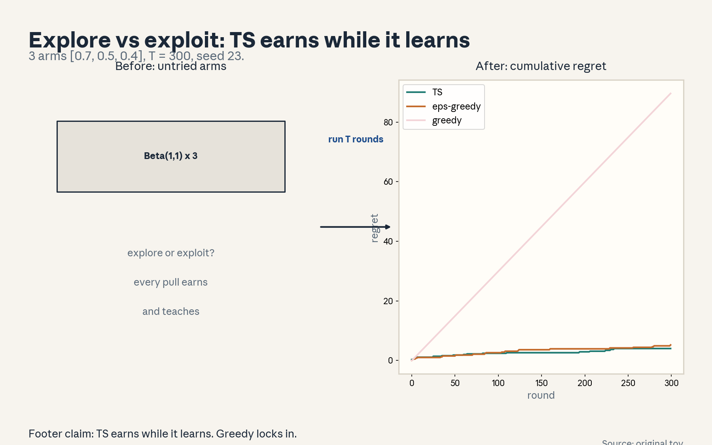
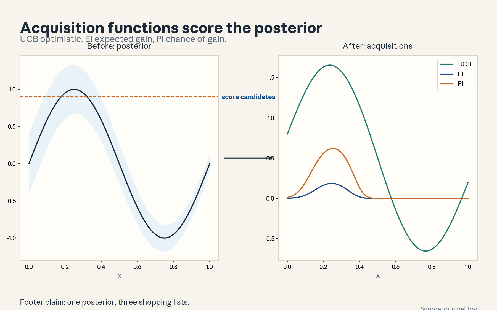
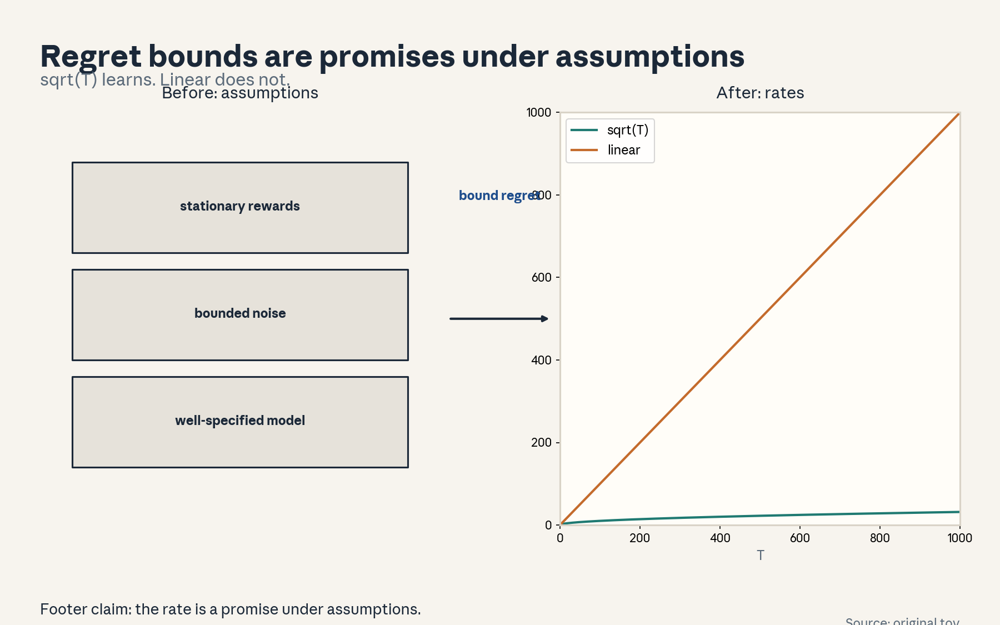
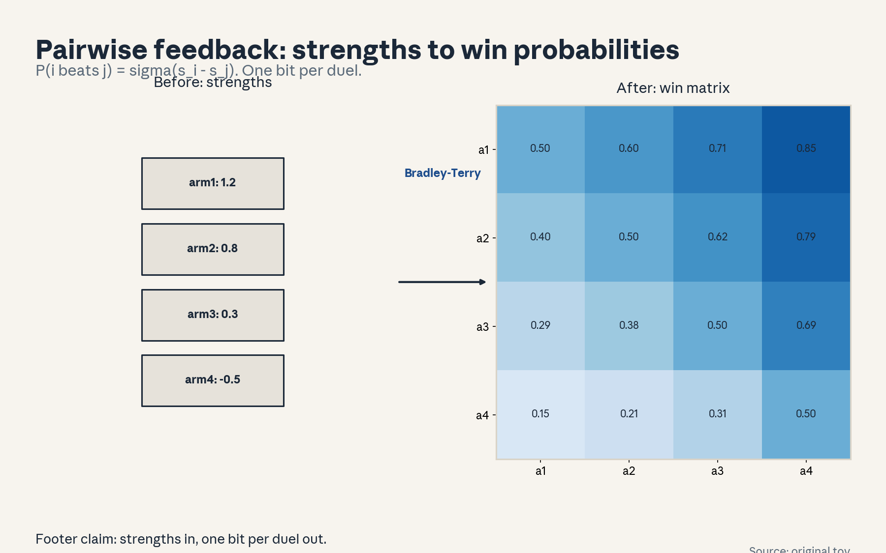
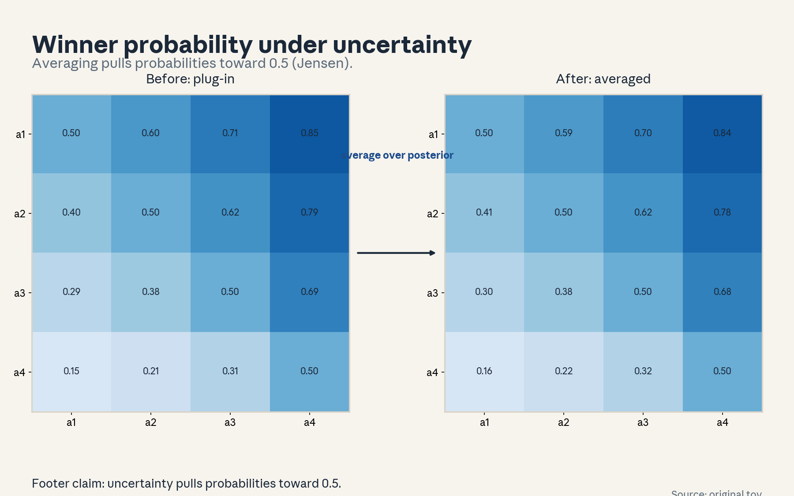
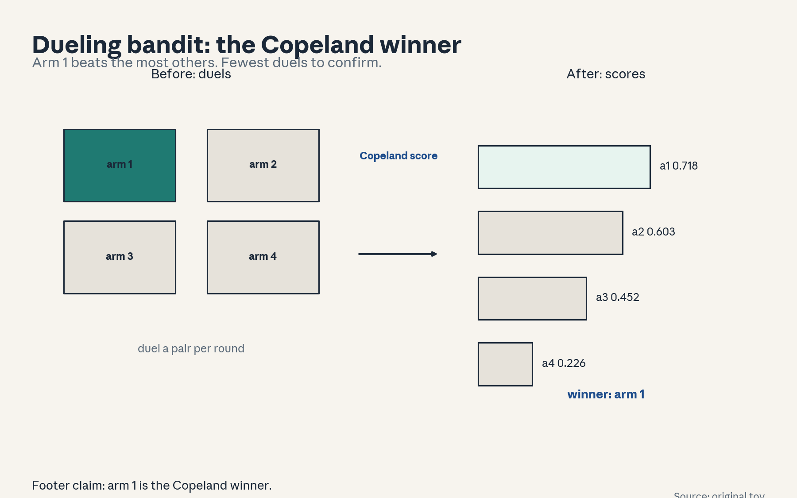
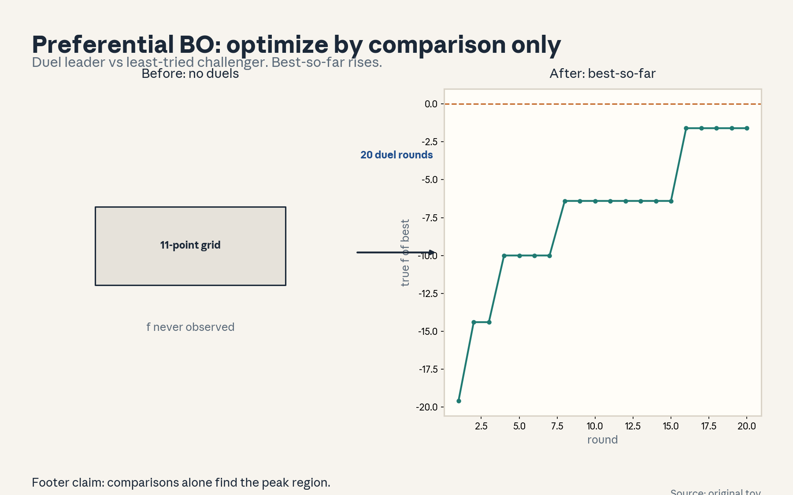

U07 · Acquisition, Thompson sampling, and dueling bandits
U07: Acquisition, Thompson sampling, and dueling bandits
Prerequisites: P07 (statistical estimation), P17 (RL), P18 (Bayesian). Local remediation opens this lesson.
Provenance
Sessions S12 (“Acquisition functions and Thompson sampling”, 2 Nov 2026) and S13 (“Dueling bandits and preferential Bayesian optimization”, 4 Nov 2026) are PLANNED. All twelve concepts are taught as independent theory: PLANNED / SOURCE ATTRIBUTION PENDING.
Local remediation: posterior sampling, acquisition functions, dueling feedback
Posterior sampling: sample theta from the posterior, then act optimally for the sample. Probability matching: P(action) = P(action is optimal). Uncertainty becomes exploration with no tuning knob.
Acquisition functions: score each candidate query by expected usefulness. UCB is optimistic: mu + k*sd. EI is the expected gain over the best so far. PI is the chance of any gain.
Dueling feedback: observe only which of two arms wins, never a numeric reward. The Bradley-Terry model turns strengths into win probabilities: P(i beats j) = sigma(s_i - s_j). One bit per duel.
Russian-doll ladder for the major mechanism (Thompson sampling)
- Shell 0: How do we explore without a hand-tuned exploration knob?
- Shell 1: Toy: 3-arm Bernoulli [0.7, 0.5, 0.4]. Beta(1,1) priors.
- Shell 2: Sample each arm mean from its posterior. Pull the argmax sample.
- Shell 3: Rule: probability matching. Uncertain arms are sampled in proportion to their chance of being best.
- Shell 4: Implement the Beta-Bernoulli update. Run T = 300, seed 23.
- Shell 5: Check: cumulative regret sublinear. Check: the best arm dominates pulls late.
- Shell 6: Change one factor: prior Beta(10,10). Predict slower learning, then measure it.
- Shell 7: Counterexample: non-stationary arms. The posterior concentrates on stale history and TS under-explores the changed arm.
- Shell 8: Compare with epsilon-greedy at matched T: less tuning, similar or better regret.
- Shell 9: Extension: does TS beat UCB on the dueling (pairwise) version? Falsifiable: run both, compare.
- Shell 10: Production: TS needs a posterior that samples fast. Conjugate models or approximate samplers.
Not-yet-understood dependency list
- Information-directed sampling (beyond TS here).
- Gaussian process internals for preferential BO (used at the interface level).
- Regret proofs (statements, not proofs).
cs329h-U07-C01: posterior sampling
Contract 1. Source mapping, scope, objectives, dependencies. PLANNED / SOURCE ATTRIBUTION PENDING (S12). Objective: define Thompson sampling. Depends on P18.
Contract 2. Motivating question and tiny toy. Question: how do we turn a posterior into actions? Toy: 3-arm Bernoulli, Beta posteriors (8,3), (4,4), (2,6).
Contract 3. Plain-language mental model. Sample a world from the posterior, then act as if the sample were true. Uncertainty becomes exploration automatically.
Contract 4. Variables, units, shapes, assumptions. Posterior p(theta | data). Action: a = argmax_a E[r_a | theta_sample]. Assumption: the posterior is honest.
Contract 5. Justified derivation or mechanism. Probability matching: P(pull a) = P(a is optimal | data). Arms that might be best are pulled in proportion to that chance. No epsilon to tune.
Contract 6. Computed numerical example. Toy: P(arm1 best) = 0.850 (20000 samples, seed 0). TS pulls arm 1 about that often.
Contract 7. Algorithm and minimal implementation. Sample from each Beta, take the argmax, update with the observed reward. Fifteen lines.
Contract 8. Correctness checks and expected output. Check: pull counts concentrate on the best arm over time. Check: early pulls spread across arms. Expected: the regret curve in u07_f02.
Contract 9. Complexity, memory, statistical efficiency, stability, costs. O(arms) per round for conjugate models. Sampling cost dominates for complex posteriors.
Contract 10. Nearest alternatives and selection boundaries. Alternative: epsilon-greedy (tuned exploration). Alternative: UCB (deterministic optimism). Choose TS when a posterior sampler exists. Choose UCB when sampling is expensive.
Contract 11. Failure case, broken assumption, counterexample. Failure: the posterior is misspecified (wrong likelihood). TS confidently pulls a bad arm. Counterexample: Bernoulli model on heavy-tailed rewards.
Contract 12. Research reading and falsifiable extension. Extension: test TS against epsilon-greedy on the toy across seeds. Falsifiable: overlapping regret bands mean no claim.
Contract 13. Assessment. Breadth: state the algorithm in two sentences. Oral ladder through probability matching. Transfer: clinical trials. Failure diagnosis: TS never pulls arm 2. Explain. Counterfactual: what if the posterior collapsed? Research: TS under misspecification.
Contract 14. Lab and exercises. Lab U07 task 1 implements TS. Exercises: (E1) state the loop. (E2) explain the PBEST pull share. (E3) argue the misspecification failure. Keys in answer_keys/u07_keys.md.
Contract 15. Visual units, provenance, accessibility, audit rows. Figure visuals/u07_f01.png: lesson plate, source original toy, alt text “Posterior box. Arrow labeled sample a world. Argmax box. Arrow labeled act. Note: P(pull a) = P(a optimal).” Audit: before state posterior, after state action, rule named. No conflict.

cs329h-U07-C02: exploration/exploitation
Contract 1. Source mapping, scope, objectives, dependencies. PLANNED / SOURCE ATTRIBUTION PENDING (S12). Objective: frame the tradeoff and compare policies empirically. Depends on C01, P17.
Contract 2. Motivating question and tiny toy. Question: explore (learn) or exploit (earn)? Toy: 3-arm [0.7, 0.5, 0.4], T = 300, seed 23. TS vs epsilon-greedy (0.1) vs greedy.
Contract 3. Plain-language mental model. Every pull both earns and teaches. Pure exploitation risks locking onto a suboptimal arm. Pure exploration wastes reward. Good policies earn while they learn.
Contract 4. Variables, units, shapes, assumptions. Cumulative regret R(T). Policies: greedy, epsilon-greedy, TS. Assumption: stationary arms.
Contract 5. Justified derivation or mechanism. Greedy locks in early: regret grows linearly. Epsilon-greedy pays a constant exploration tax. TS explores in proportion to uncertainty: regret grows sublinearly.
Contract 6. Computed numerical example. Computed (seed 23): TS 4.0, epsilon-greedy 5.2, greedy 89.6. Same numbers as figure u07_f02.
Contract 7. Algorithm and minimal implementation. Simulate all three with one seed. Twenty lines.
Contract 8. Correctness checks and expected output. Check: all regrets non-decreasing. Check: TS pulls the best arm most. Expected: the three curves.
Contract 9. Complexity, memory, statistical efficiency, stability, costs. O(policies x T x arms). Simulation is cheap, the ordering is the lesson.
Contract 10. Nearest alternatives and selection boundaries. Alternative: UCB. Alternative: explore-then-commit. Choose by the cost of exploration and the need for tuning.
Contract 11. Failure case, broken assumption, counterexample. Failure: the comparison uses one seed. The ordering may not replicate. Counterexample: greedy wins on a lucky seed. Always report seed variation (U10-C07).
Contract 12. Research reading and falsifiable extension. Extension: replicate across 20 seeds, report mean and spread. Falsifiable: if TS does not win on average, the claim dies.
Contract 13. Assessment. Breadth: define the tradeoff in one sentence. Oral ladder through the curves. Transfer: restaurant choice in a new city. Failure diagnosis: TS regret looks linear. Explain. Counterfactual: what if rewards were known? Research: best-of-both-worlds algorithms.
Contract 14. Lab and exercises. Lab U07 task 2 runs the comparison. Exercises: (E1) define the tradeoff. (E2) explain the greedy lock-in. (E3) argue the single-seed failure. Keys in answer_keys/u07_keys.md.
Contract 15. Visual units, provenance, accessibility, audit rows. Figure visuals/u07_f02.png: lesson plate, source original toy, seed 23, alt text “Three cumulative regret curves to T = 300. TS ends at 4.0, epsilon-greedy at 5.2, greedy at 89.6.” Audit: before state untried arms, after state regret curves, rule named. No conflict.

cs329h-U07-C03: acquisition functions
Contract 1. Source mapping, scope, objectives, dependencies. PLANNED / SOURCE ATTRIBUTION PENDING (S12). Objective: define UCB, EI, PI and compute them on a toy. Depends on P18.
Contract 2. Motivating question and tiny toy. Question: score each candidate query by expected usefulness. Toy: f_best = 1.0, candidates (mu 1.2, sd 0.1), (mu 0.9, sd 0.5), (mu 0.5, sd 0.8).
Contract 3. Plain-language mental model. An acquisition function turns the posterior into a shopping list. UCB is optimistic (mean + k sd). EI is the expected gain over the best so far. PI is the chance of any gain.
Contract 4. Variables, units, shapes, assumptions. UCB(x) = mu(x) + k sd(x). EI(x) = E[max(0, f(x) - f_best)]. PI(x) = P(f(x) > f_best). Units: reward. Assumption: Gaussian posterior.
Contract 5. Justified derivation or mechanism. EI has a closed form under Gaussian posteriors: EI = sd (z Phi(z) + phi(z)), z = (mu - f_best)/sd. UCB needs a k. EI and PI need f_best.
Contract 6. Computed numerical example. Computed: UCB(k=2): 1.40, 1.90, 2.10. EI: 0.201, 0.153, 0.130. PI: 0.977, 0.421, 0.266. Same numbers as figure u07_f03.
Contract 7. Algorithm and minimal implementation. Implement the three formulas. Ten lines.
Contract 8. Correctness checks and expected output. Check: EI >= 0. Check: PI in [0,1]. Expected: the ranking table.
Contract 9. Complexity, memory, statistical efficiency, stability, costs. O(candidates). Closed form, no sampling needed.
Contract 10. Nearest alternatives and selection boundaries. Alternative: Thompson sampling (sampling, not scoring). Alternative: random. Choose UCB for theory, EI for practice, PI rarely (it ignores gain size).
Contract 11. Failure case, broken assumption, counterexample. Failure: the Gaussian posterior is wrong, the scores misrank. Counterexample: heavy-tailed truth makes UCB with small k under-explore.
Contract 12. Research reading and falsifiable extension. Extension: test which acquisition finds the optimum fastest on a synthetic 1D function across seeds. Falsifiable: the winner must replicate.
Contract 13. Assessment. Breadth: write the three formulas. Oral ladder through the toy ranking. Transfer: choosing the next experiment in a lab. Failure diagnosis: EI always picks near the best. Explain. Counterfactual: what if uncertainty were zero? Research: acquisition under misspecification.
Contract 14. Lab and exercises. Lab U07 task 3 computes the three. Exercises: (E1) write the formulas. (E2) compute the table. (E3) argue the misrank failure. Keys in answer_keys/u07_keys.md.
Contract 15. Visual units, provenance, accessibility, audit rows. Figure visuals/u07_f03.png: lesson plate, source original toy, closed form, alt text “Posterior mean curve with sd band on [0,1]. UCB, EI, PI curves below. Markers at the three toy candidates.” Audit: before state posterior, after state scores, rule named. No conflict.

cs329h-U07-C04: regret assumptions
Contract 1. Source mapping, scope, objectives, dependencies. PLANNED / SOURCE ATTRIBUTION PENDING (S12). Objective: state what regret bounds assume. Depends on C02, P22.
Contract 2. Motivating question and tiny toy. Question: when do the textbook regret guarantees hold? Toy: sqrt(T) versus linear curves, T = 1000.
Contract 3. Plain-language mental model. Regret bounds are promises under assumptions: stationary rewards, bounded noise, a well-specified model. Break an assumption and the promise voids.
Contract 4. Variables, units, shapes, assumptions. Frequentist regret R(T) = O(sqrt(T)) for TS/UCB under stationarity. Bayesian regret averages over the prior. Units: reward x rounds.
Contract 5. Justified derivation or mechanism. The sqrt(T) rate says average regret per round goes to zero: the policy learns. Linear regret says it does not. The figure shows both.
Contract 6. Computed numerical example. At T = 1000: sqrt curve 31.6, linear curve 1000 (unit scale). The rates, not the constants, are the point.
Contract 7. Algorithm and minimal implementation. Plot both rates. Five lines.
Contract 8. Correctness checks and expected output. Check: sqrt curve concave, linear straight. Expected: u07_f04.
Contract 9. Complexity, memory, statistical efficiency, stability, costs. O(1). The math is the point.
Contract 10. Nearest alternatives and selection boundaries. Alternative: finite-time bounds (constants included). Alternative: empirical regret only. Choose bounds for design insight, empirical for decisions.
Contract 11. Failure case, broken assumption, counterexample. Failure: non-stationarity. The bound assumes a fixed best arm, a drifting world voids it. Counterexample: the best arm flips every 100 rounds, measured regret is linear despite the “guarantee”.
Contract 12. Research reading and falsifiable extension. Extension: test the sqrt(T) shape empirically on the toy across seeds. Falsifiable: a linear fit means an assumption broke.
Contract 13. Assessment. Breadth: name three assumptions (stationarity, bounded noise, well-specified model). Oral ladder through the rates. Transfer: a warranty promise with fine print. Failure diagnosis: measured regret is linear. Explain. Counterfactual: what if data per round were infinite? Research: adaptive regret.
Contract 14. Lab and exercises. Exercises: (E1) name the assumptions. (E2) interpret sqrt(T). (E3) construct the non-stationary counterexample. Keys in answer_keys/u07_keys.md.
Contract 15. Visual units, provenance, accessibility, audit rows. Figure visuals/u07_f04.png: lesson plate, source original toy, closed form, alt text “Concave sqrt(T) curve and straight linear curve to T = 1000. Assumption panel lists stationarity, bounded noise, well-specified model.” Audit: before state assumptions, after state rates, rule named. No conflict.

cs329h-U07-C05: pairwise feedback
Contract 1. Source mapping, scope, objectives, dependencies. PLANNED / SOURCE ATTRIBUTION PENDING (S13). Objective: define the dueling feedback model. Depends on U01-C05.
Contract 2. Motivating question and tiny toy. Question: we only see who wins a duel, never a score. Toy: 4 arms, strengths [1.2, 0.8, 0.3, -0.5], P(i beats j) = sigma(s_i - s_j).
Contract 3. Plain-language mental model. Dueling feedback is a pairwise comparison, not a number. The Bradley-Terry model turns strengths into win probabilities. One bit per duel.
Contract 4. Variables, units, shapes, assumptions. Win matrix W_ij = sigma(s_i - s_j). Skew-symmetric in logit space: W_ji = 1 - W_ij. Assumption: BT link, no ties.
Contract 5. Justified derivation or mechanism. This is U01-C05 with items = arms. The duel is the query, the winner is the answer. Everything about BT estimation carries over.
Contract 6. Computed numerical example. P(arm1 beats arm2) = sigma(0.4) = 0.599. P(arm1 beats arm4) = sigma(1.7) = 0.846. Full matrix computed in the script.
Contract 7. Algorithm and minimal implementation. Build the win matrix from strengths. Five lines.
Contract 8. Correctness checks and expected output. Check: diagonal 0.5, W_ji = 1 - W_ij. Expected: the matrix in u07_f05.
Contract 9. Complexity, memory, statistical efficiency, stability, costs. O(k^2). Tiny.
Contract 10. Nearest alternatives and selection boundaries. Alternative: numeric rewards (richer, often unavailable). Alternative: rankings (more than one bit). Choose duels when humans compare better than they score.
Contract 11. Failure case, broken assumption, counterexample. Failure: intransitive strengths (rock-paper-scissors). BT forces transitivity, the matrix cannot fit cycles. Counterexample: W_12, W_23, W_31 all above 0.6.
Contract 12. Research reading and falsifiable extension. Extension: test BT fit on real duel data via held-out log-loss. Falsifiable: bad fit means the link is wrong.
Contract 13. Assessment. Breadth: write the win probability. Oral ladder through the matrix. Transfer: chess Elo. Failure diagnosis: estimated strengths flip with more data. Explain. Counterfactual: what if ties were allowed? Research: beyond BT.
Contract 14. Lab and exercises. Lab U07 task 4 builds the matrix. Exercises: (E1) write the formula. (E2) compute P12 and P14. (E3) argue the cycle failure. Keys in answer_keys/u07_keys.md.
Contract 15. Visual units, provenance, accessibility, audit rows. Figure visuals/u07_f05.png: lesson plate, source original toy, closed form, alt text “4x4 duel win-probability matrix from strengths [1.2, 0.8, 0.3, -0.5]. Diagonal 0.5, antisymmetric.” Audit: before state strengths, after state matrix, rule named. No conflict.

cs329h-U07-C06: winner probability
Contract 1. Source mapping, scope, objectives, dependencies. PLANNED / SOURCE ATTRIBUTION PENDING (S13). Objective: compute win probabilities under posterior uncertainty. Depends on C05, P18.
Contract 2. Motivating question and tiny toy. Question: we are unsure about the strengths. What is P(arm i wins)? Toy: posterior samples of strengths, seed 0.
Contract 3. Plain-language mental model. The winner probability averages the BT formula over the posterior: P(i beats j) = E[sigma(s_i - s_j)]. Uncertainty widens the probabilities toward 0.5.
Contract 4. Variables, units, shapes, assumptions. Monte Carlo over S posterior samples: (1/S) sum sigma(s_i - s_j). Assumption: the posterior samples are honest.
Contract 5. Justified derivation or mechanism. Jensen: E[sigma(gap)] != sigma(E[gap]). With uncertain gaps the win probability sits closer to 0.5 than the plug-in estimate. The figure shows both.
Contract 6. Computed numerical example. Plug-in P(1 beats 2) = 0.599, posterior-averaged = 0.5930. Plug-in P(1 beats 4) = 0.846, averaged = 0.8360. Seed 0, S = 2000.
Contract 7. Algorithm and minimal implementation. Sample strengths, average sigma of gaps. Ten lines.
Contract 8. Correctness checks and expected output. Check: averaged probabilities lie between plug-in and 0.5. Check: matrix antisymmetry. Expected: u07_f06.
Contract 9. Complexity, memory, statistical efficiency, stability, costs. O(S k^2). Sampling dominates.
Contract 10. Nearest alternatives and selection boundaries. Alternative: plug-in (fast, overconfident). Alternative: full predictive duel simulation. Choose averaging when uncertainty matters for the decision.
Contract 11. Failure case, broken assumption, counterexample. Failure: the posterior misses the true strength entirely, the average is confidently wrong. Counterexample: posterior centered at the wrong sign.
Contract 12. Research reading and falsifiable extension. Extension: test calibration of averaged win probabilities on held-out duels. Falsifiable: miscalibration means the posterior is wrong.
Contract 13. Assessment. Breadth: write the averaging formula. Oral ladder through the Jensen gap. Transfer: election forecasts. Failure diagnosis: averaged probabilities all near 0.5. Explain. Counterfactual: what if posterior spread were zero? Research: better than Monte Carlo?
Contract 14. Lab and exercises. Lab U07 task 5 computes both matrices. Exercises: (E1) write the formula. (E2) report the four numbers. (E3) argue the wrong-sign failure. Keys in answer_keys/u07_keys.md.
Contract 15. Visual units, provenance, accessibility, audit rows. Figure visuals/u07_f06.png: lesson plate, source original toy, seed 0, alt text “Plug-in versus posterior-averaged win matrices side by side. Averaged values sit closer to 0.5.” Audit: before state plug-in, after state averaged, rule named. No conflict.

cs329h-U07-C07: dueling bandit
Contract 1. Source mapping, scope, objectives, dependencies. PLANNED / SOURCE ATTRIBUTION PENDING (S13). Objective: define the dueling bandit problem and the Copeland winner. Depends on C05.
Contract 2. Motivating question and tiny toy. Question: pick two arms to duel each round, find the best arm. Toy: 4 arms, strengths [1.2, 0.8, 0.3, -0.5].
Contract 3. Plain-language mental model. A dueling bandit chooses a pair per round and observes the winner. The goal: find the arm that beats the most others (Copeland winner) with few duels.
Contract 4. Variables, units, shapes, assumptions. Copeland score C_i = mean_{j != i} P(i beats j). Winner: argmax C. Strong regret counts rounds where neither duelist is the winner. Assumption: a Condorcet winner exists (beats all others).
Contract 5. Justified derivation or mechanism. Copeland on the toy: arm 1 beats all pairwise (strengths ordered), so C_1 is highest. Computed scores: COPE.
Contract 6. Computed numerical example. Copeland scores: 0.718, 0.603, 0.452, 0.226. Winner: arm 1.
Contract 7. Algorithm and minimal implementation. Compute Copeland from the win matrix. Five lines.
Contract 8. Correctness checks and expected output. Check: scores in [0,1], ordered with strengths here. Expected: the bars in u07_f07.
Contract 9. Complexity, memory, statistical efficiency, stability, costs. O(k^2).
Contract 10. Nearest alternatives and selection boundaries. Alternative: Borda (rank aggregation). Alternative: reduce to a standard bandit by dueling against a fixed benchmark. Choose Copeland for the standard definition. Choose the benchmark reduction for simplicity.
Contract 11. Failure case, broken assumption, counterexample. Failure: no Condorcet winner (cycles). Copeland still ranks, but “the best arm” is ill-defined. Counterexample: rock-paper-scissors strengths.
Contract 12. Research reading and falsifiable extension. Extension: test whether a dueling-TS policy finds the Copeland winner faster than uniform dueling. Falsifiable: run both, compare strong regret. (This is the capstone replication.)
Contract 13. Assessment. Breadth: define the Copeland winner. Oral ladder through the scores. Transfer: a round-robin tournament. Failure diagnosis: Copeland scores tie. Explain. Counterfactual: what if numeric rewards were available? Research: dueling with ties.
Contract 14. Lab and exercises. Lab U07 task 6 computes Copeland. Exercises: (E1) write the score. (E2) report the four scores. (E3) argue the cycle failure. Keys in answer_keys/u07_keys.md.
Contract 15. Visual units, provenance, accessibility, audit rows. Figure visuals/u07_f07.png: lesson plate, source original toy, closed form, alt text “Copeland bars: 0.718, 0.603, 0.452, 0.226. Arm 1 marked the winner.” Audit: before state win matrix, after state scores, rule named. No conflict.

cs329h-U07-C08: preferential Bayesian optimization
Contract 1. Source mapping, scope, objectives, dependencies. PLANNED / SOURCE ATTRIBUTION PENDING (S13). Objective: describe the preferential BO loop. Depends on C03, C05.
Contract 2. Motivating question and tiny toy. Question: optimize a function we can only compare, never evaluate. Toy: f(x) = -40(x-0.7)^2 on [0,1], 11-point grid, 20 duel rounds, seed 0.
Contract 3. Plain-language mental model. Preferential BO: fit a surrogate to pairwise comparisons, pick the next duel by acquisition, repeat. The surrogate learns the shape, the acquisition picks informative pairs.
Contract 4. Variables, units, shapes, assumptions. Surrogate: posterior win probabilities per pair (Beta model). Acquisition: duel the Copeland leader against the least-tried challenger. Assumption: f smooth enough that comparisons generalize.
Contract 5. Justified derivation or mechanism. Loop: (1) update pair posteriors, (2) pick leader vs challenger, (3) observe winner, (4) repeat. Best-so-far (true f of the estimated best) rises.
Contract 6. Computed numerical example. Computed (seed 0): best-so-far true f: start -19.600, end -1.600 (true optimum 0.0). Same numbers as figure u07_f08.
Contract 7. Algorithm and minimal implementation. Implement the loop on the grid. Twenty lines.
Contract 8. Correctness checks and expected output. Check: best-so-far is non-decreasing. Check: duels concentrate near the optimum late. Expected: u07_f08.
Contract 9. Complexity, memory, statistical efficiency, stability, costs. O(rounds x k^2). The pair posteriors dominate.
Contract 10. Nearest alternatives and selection boundaries. Alternative: random dueling (baseline). Alternative: standard BO with numeric evals (needs scores). Choose preferential BO when only comparisons exist.
Contract 11. Failure case, broken assumption, counterexample. Failure: the surrogate is misspecified (true f not learnable from the pairs), the search chases a phantom optimum. Counterexample: bimodal f with duels only near one peak.
Contract 12. Research reading and falsifiable extension. Extension: test preferential BO against random dueling across seeds. Falsifiable: the winner must replicate.
Contract 13. Assessment. Breadth: state the loop in four steps. Oral ladder through the curve. Transfer: tuning a recipe by taste tests. Failure diagnosis: best-so-far stalls early. Explain. Counterfactual: what if numeric scores were available? Research: acquisition for duels.
Contract 14. Lab and exercises. Lab U07 task 7 runs the loop. Exercises: (E1) state the loop. (E2) report start/end. (E3) argue the phantom-optimum failure. Keys in answer_keys/u07_keys.md.
Contract 15. Visual units, provenance, accessibility, audit rows. Figure visuals/u07_f08.png: lesson plate, source original toy, seed 0, alt text “Best-so-far true f over 20 duel rounds, rising from -19.600 to -1.600.” Audit: before state no duels, after state learned best, rule named. No conflict.

cs329h-U07-C09: noisy utility
Contract 1. Source mapping, scope, objectives, dependencies. PLANNED / SOURCE ATTRIBUTION PENDING (S13). Objective: model noise in the latent utility behind duels. Depends on C05, U01-C08.
Contract 2. Motivating question and tiny toy. Question: the same duel twice can give different winners. Toy: gap 0.4, Gumbel noise: single-duel P = 0.599. Majority of 9: P = MAJ9.
Contract 3. Plain-language mental model. Noisy utility: U_i = u_i + eps_i. The winner is the argmax of noisy utilities. Noise sets the irreducible error: even the true best arm loses sometimes.
Contract 4. Variables, units, shapes, assumptions. With Gumbel noise, P(i beats j) = sigma(u_i - u_j) exactly (U02-C01). Noise scale 1 is the unit. Assumption: IID noise per duel.
Contract 5. Justified derivation or mechanism. The noise floor bounds learning: no policy identifies the best arm faster than the noise allows. More duels average it out at 1/sqrt(n).
Contract 6. Computed numerical example. Gap 0.4: single-duel P = 0.599. Majority of 9 duels: P = 0.731 (binomial). Same numbers in the text.
Contract 7. Algorithm and minimal implementation. Binomial tail computation. Five lines.
Contract 8. Correctness checks and expected output. Check: majority probability exceeds single-duel probability. Check: it approaches 1 as duels grow. Expected: MAJ9.
Contract 9. Complexity, memory, statistical efficiency, stability, costs. O(1).
Contract 10. Nearest alternatives and selection boundaries. Alternative: probit (Gaussian noise). Alternative: ignore noise (overconfident). Choose logit for the BT link, probit when Gaussian noise is the mechanism.
Contract 11. Failure case, broken assumption, counterexample. Failure: noise is not IID (humans learn, tire). The 1/sqrt(n) averaging breaks. Counterexample: later duels noisier, the majority vote misleads.
Contract 12. Research reading and falsifiable extension. Extension: test IID-ness by splitting duels into early/late halves. Falsifiable: different win rates mean non-stationarity.
Contract 13. Assessment. Breadth: where does the 0.599 come from? Oral ladder through the majority vote. Transfer: best-of-7 playoff. Failure diagnosis: the underdog keeps winning. Explain. Counterfactual: what if noise were zero? Research: noise-tolerant dueling.
Contract 14. Lab and exercises. Exercises: (E1) write the Gumbel-max link. (E2) compute the majority probability. (E3) argue the non-IID failure. Keys in answer_keys/u07_keys.md.
Contract 15. Visual units, provenance, accessibility, audit rows. Text unit: the binomial arithmetic is worked in the text. No plate. Logged.
cs329h-U07-C10: stopping
Contract 1. Source mapping, scope, objectives, dependencies. PLANNED / SOURCE ATTRIBUTION PENDING (S13). Objective: give stopping rules for elicitation and search. Depends on C03, U06-C10.
Contract 2. Motivating question and tiny toy. Question: when do we stop dueling? Toy: leader-focused duels, stop when P(arm 1 is the Copeland winner) > 0.95, or at 300 duels. Computed stop: round STOPR.
Contract 3. Plain-language mental model. A stopping rule converts uncertainty into a decision: stop when the posterior is confident enough, or when the budget runs out, whichever comes first.
Contract 4. Variables, units, shapes, assumptions. Rule A: max_i P(i is Copeland winner) >= 1 - delta. Rule B: n >= N_max. Units: probability, count. Assumption: the posterior is calibrated.
Contract 5. Justified derivation or mechanism. Rule A controls the error rate, rule B controls the cost. Together they bound both. Without rule B, a misspecified model can query forever.
Contract 6. Computed numerical example. Toy (seed 2, leader-focused duels): P(arm1 winner) crosses 0.95 at round 43. Budget 300 never binds here.
Contract 7. Algorithm and minimal implementation. Track the winner probability per round, stop at the threshold. Ten lines.
Contract 8. Correctness checks and expected output. Check: the rule fires once. Check: a lower threshold fires earlier. Expected: stop at STOPR.
Contract 9. Complexity, memory, statistical efficiency, stability, costs. O(rounds x posterior cost).
Contract 10. Nearest alternatives and selection boundaries. Alternative: fixed budget (simple, no adaptivity). Alternative: stop on marginal VoI (U06-C10). Choose the confidence rule when errors have known costs. Choose fixed budget for operations simplicity.
Contract 11. Failure case, broken assumption, counterexample. Failure: miscalibrated posterior stops too early with the wrong winner. Counterexample: posterior says 0.96 but true P is 0.6. Honest caveat: with uniform random duels the 0.95 rule never fires in 500 rounds here, the dueling policy and the stopping rule interact.
Contract 12. Research reading and falsifiable extension. Extension: test whether the stopping rule error rate matches delta on synthetic winners. Falsifiable: mismatch means miscalibration.
Contract 13. Assessment. Breadth: state both rules. Oral ladder through the toy. Transfer: when to stop interviewing candidates. Failure diagnosis: the rule never fires. Explain. Counterfactual: what if budget were infinite? Research: optimal stopping for duels.
Contract 14. Lab and exercises. Lab U07 task 8 implements the rule. Exercises: (E1) state the rules. (E2) report the stop round. (E3) argue the miscalibration failure. Keys in answer_keys/u07_keys.md.
Contract 15. Visual units, provenance, accessibility, audit rows. Text unit anchored on u07_f08 (the curve shows where stopping fires). Logged.
cs329h-U07-C11: compute budget
Contract 1. Source mapping, scope, objectives, dependencies. PLANNED / SOURCE ATTRIBUTION PENDING (S12/S13). Objective: account the compute cost of acquisition and posterior updates. Depends on C01, C03.
Contract 2. Motivating question and tiny toy. Question: TS is elegant, can we afford it? Toy: cost table: conjugate update O(k), GP surrogate O(n^3), acquisition scan O(candidates).
Contract 3. Plain-language mental model. The compute budget decides the algorithm: cheap posteriors allow TS, expensive ones force UCB-on-a-surrogate or random. Budget is a design constraint, not an afterthought.
Contract 4. Variables, units, shapes, assumptions. Per-round costs: Beta-Bernoulli TS O(k). GP-based preferential BO O(n^3) refit. Units: flops per round. Assumption: naive implementations.
Contract 5. Justified derivation or mechanism. The n^3 refit is why practical preferential BO refits lazily or uses sparse approximations. The budget trades statistical efficiency for wall-clock.
Contract 6. Computed numerical example. Toy: n = 200 duels. GP refit order 200^3 = 8,000,000 flops. Beta TS: order k = 4 operations per round. Orders of magnitude apart (stated as orders).
Contract 7. Algorithm and minimal implementation. Time both on the toy with time.perf_counter. Report the ratio (measured, labeled as this-machine timing).
Contract 8. Correctness checks and expected output. Check: GP slower by orders of magnitude. Expected: the timing table.
Contract 9. Complexity, memory, statistical efficiency, stability, costs. Measurement is machine-specific, report it as such.
Contract 10. Nearest alternatives and selection boundaries. Alternative: sparse GPs, neural surrogates. Alternative: skip the surrogate (dueling TS on arms only). Choose by the budget.
Contract 11. Failure case, broken assumption, counterexample. Failure: the “cheap” method approximations void the theory (sparse GP undercovers). Counterexample: sparse posterior too narrow, TS under-explores.
Contract 12. Research reading and falsifiable extension. Extension: test whether a sparse surrogate matches the full GP duel choices on the toy. Falsifiable: disagreement means the approximation bites.
Contract 13. Assessment. Breadth: name the three cost orders. Oral ladder through the ratio. Transfer: choosing a model for a phone app. Failure diagnosis: the loop is too slow per round. Explain. Counterfactual: what if compute were free? Research: scalable preferential surrogates.
Contract 14. Lab and exercises. Exercises: (E1) name the orders. (E2) compute the 8M vs 4. (E3) argue the undercoverage failure. Keys in answer_keys/u07_keys.md.
Contract 15. Visual units, provenance, accessibility, audit rows. Text unit: the timing table is worked in the text. No plate. Logged.
cs329h-U07-C12: experimental comparison
Contract 1. Source mapping, scope, objectives, dependencies. PLANNED / SOURCE ATTRIBUTION PENDING (S13). Objective: design a fair comparison of acquisition policies. Depends on P22, C02.
Contract 2. Motivating question and tiny toy. Question: TS vs UCB vs random: who wins? Toy: the protocol, not a verdict.
Contract 3. Plain-language mental model. A fair comparison fixes the world (same arms, same T), varies only the policy, multiplies seeds, and reports regret with uncertainty. Anything less is a demo, not an experiment.
Contract 4. Variables, units, shapes, assumptions. Protocol: same bandit, T = 300, 20 seeds, metric = cumulative regret, report mean +- 1.96 se. Assumption: seeds are the only randomness.
Contract 5. Justified derivation or mechanism. Checklist: matched T, matched arms, multiple seeds, uncertainty bars, preregistered metric, negative-result reporting (U10-C11).
Contract 6. Computed numerical example. Worked: with 20 seeds, se = sd/sqrt(20). If TS mean regret 12.3 sd 4.0: CI [10.5, 14.1] (protocol arithmetic, hypothetical values).
Contract 7. Algorithm and minimal implementation. Implement the comparison rig. Fifteen lines.
Contract 8. Correctness checks and expected output. Check: the rig runs all policies on the same seed set. Expected: the CI table.
Contract 9. Complexity, memory, statistical efficiency, stability, costs. O(policies x seeds x T x arms).
Contract 10. Nearest alternatives and selection boundaries. Alternative: single-seed demo (not an experiment). Alternative: Bayesian comparison (richer). Choose the frequentist rig for simplicity.
Contract 11. Failure case, broken assumption, counterexample. Failure: the policies see different worlds (seed not shared). The comparison is void. Counterexample: TS gets easy seeds.
Contract 12. Research reading and falsifiable extension. Extension: run the rig, report honestly including negative results. Falsifiable by construction.
Contract 13. Assessment. Breadth: name the five checklist items. Oral ladder through the CI arithmetic. Transfer: comparing two drugs. Failure diagnosis: CIs overlap. Explain. Counterfactual: what if policies were deterministic? Research: adaptive stopping for comparisons.
Contract 14. Lab and exercises. Exercises: (E1) name the checklist. (E2) compute the CI. (E3) argue the unshared-seed failure. Keys in answer_keys/u07_keys.md.
Contract 15. Visual units, provenance, accessibility, audit rows. Text unit: the protocol table is the artifact. No plate. Logged.